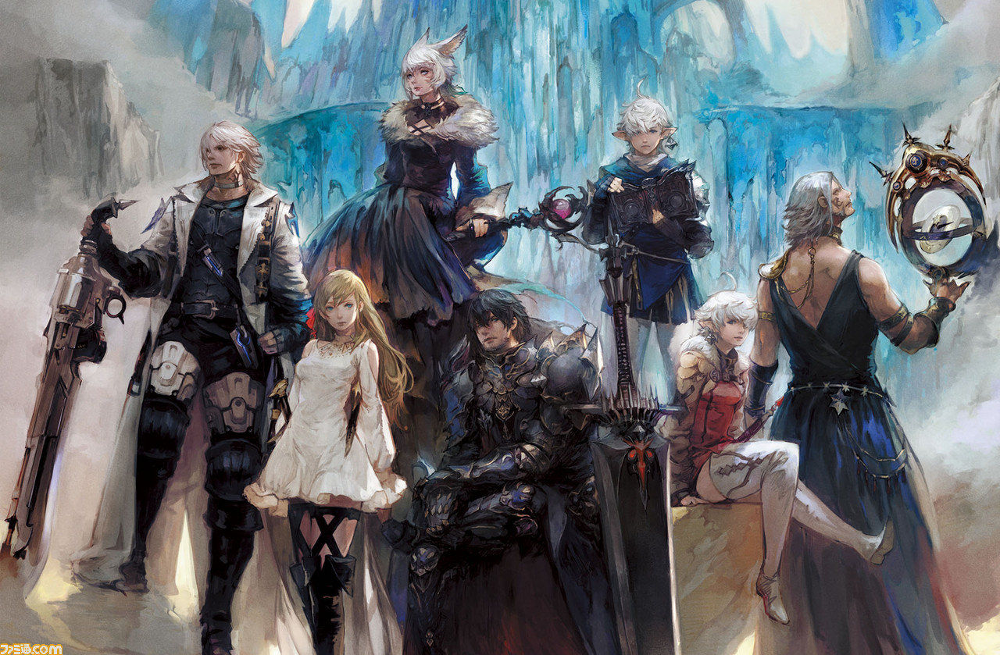
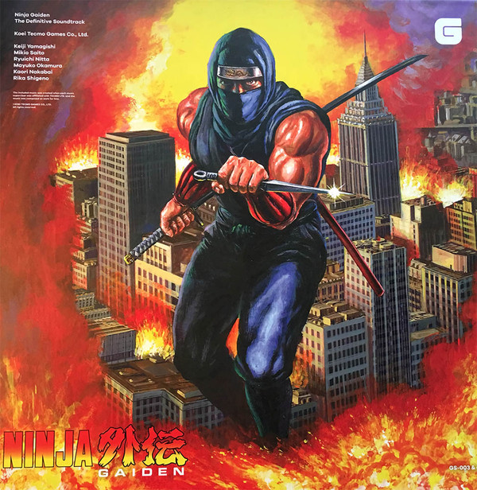

 recently tried the game Final Fantasy XIV and it brought me a whole new experience. This game integrates JRPG and MMORPG very well.
I also like the style of the whole game very much.
I will introduce the excellence of this game from several aspects.
Story
The plot of Final Fantasy XIV is a more traditional adventure game plot, that is, the hero saves the world. However, because the NPCs in the game are very vividly portrayed and the game settings are very comprehensive, the players have a strong sense of substitution.
Music
The music of the game is very good, whether it is the background music of each map or the music in the battle. Especially the latest raid's background music "Return to Oblivion". The emotion of the character is displayed through music.
The display of the game
The display of Final Fantasy XIV fits my liking very well. Both the character and the scene are in line with the "fantasy" in my heart. The variety of races in the game, the scenes that change over time, and even you can see the aurora in the game.
All in all I think Final Fantasy XIV is a great game worth trying. It is the top three MMORPG in my mind.
The charm of nostalgic games
10/10/2020 By Minshen Li
I recently played some nostalgic games while doing my MI491 essay. These games may be very different from the current games, but they are still very interesting, and I found good memories from them.
Ninja Gaiden

Ninja Gaiden is a great FC game, and its best part lies in its difficulty and music. Its difficulty is very high compared to other FC games. At the same time, its music is also very good. If you don't watch the game, you might not think it is an FC game, because the rhythm of this 8-bit music is very complicated, and its left and right channel melody is also different. This sense of difference leads to a special stereo.
Contra
Contra is a very classic FC game. This game is the one I played the most when I was a kid. I can still vaguely remember some levels. When I played this game again, I seemed to be back that summer, and my brother and I were sitting together playing Contra. Although our technology is not very good and there is no way to pass this game, we can still feel happy.
Maybe it's a very warm and beautiful thing to look back once in a while and then look for the memories of the past.